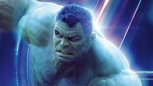
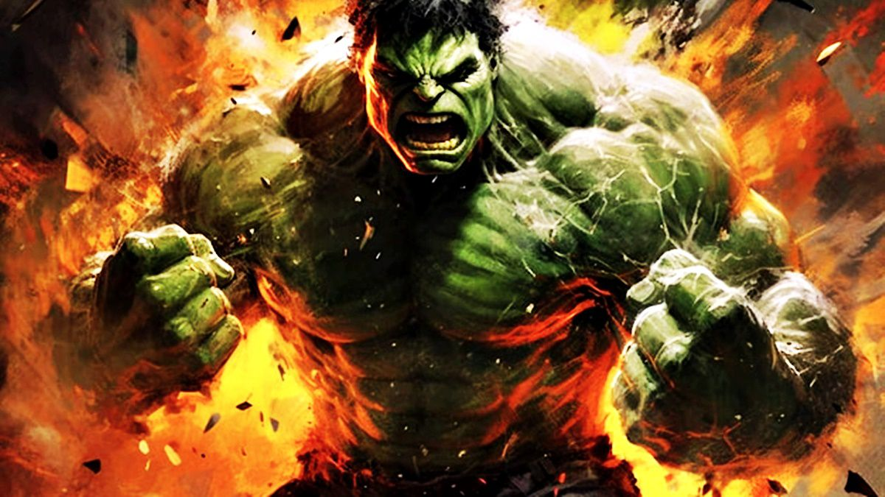
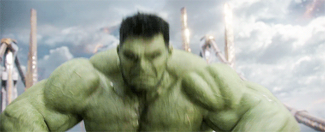

Hulk
Criação e desenvolvimento
Na história original dos quadrinhos, o Hulk é um selvagem e poderoso alter ego do Dr. Robert Bruce Banner, um cientista que foi atingido por raios gama enquanto salvava um adolescente durante o teste militar de uma bomba por ele desenvolvida. Este adolescente, Rick Jones, tornou-se companheiro de Banner, ajudando-o a manter o Hulk sob controle e mantê-lo longe dos ataques dos militares, que viam a criatura como uma ameaça.
Biografia do Hulk
O Dr. Robert Bruce Banner era o filho do Dr. Brian Banner, um cientista atômico, e sua esposa Rebecca. Embora Rebecca amasse profundamente Bruce, que retribuiu o carinho, Brian odiava o filho. Alcoólatra, Brian Banner foi levado por um ciúme insano por Bruce, por ele ser objeto do amor de Rebecca. Além disso, Brian acreditava que seu trabalho com radiação tinha alterado o seu DNA e lhe deu um filho mutante. Ele finalmente assassinou Rebecca e foi colocado em um hospital psiquiátrico. Bruce, um grande e jovem intelectual, foi criado por sua tia, a senhora Drake, e internalizou sua grande dor e raiva sobre os sofrimentos de sua infância. Bruce mais tarde frequentou a faculdade onde conheceu Tony Stark, com quem iniciou uma grande amizade e também uma rivalidade.
  Habiliades do Hulk
- Força ilimitada:
- Resistência sobre-humana:
- Invulnerabilidade:
- Grande resistência mental:
a força do Hulk não "possui um limite estabelecido", atingindo níveis inacreditáveis. Com ela, pode pular enormes distâncias com um único impulso de seus membros, e usar as mãos para fazer uma palmada sônica — um bater de palmas usado por Hulk, causando fortes ondas sonoras e ventos, e pode erguer um peso ilimitado de força. Sua força cresce após o aumento de adrenalina no seu sistema circulatório.
Por ter um organismo modificado e uma pele densa e resistente, pode sobreviver em locais com baixos índices de oxigênio. O Hulk também já resistiu a uma Supernova sem sofrer queimaduras;
Hulk possui um alto grau de invulnerabilidade, o que torna sua pele impermeável a balas, facadas, bombas, sendo que apenas os metais adamantium e vibranium podem feri-lo;
Devido as múltiplas personalidades e a complexidade da mente do Hulk, ele possui grande resistência a ataques mentais, sendo dificilmente vencido ou dominado por este tipo de superpoder;
Hulk tem diversos outros poderes, sendo considerado um dos personagens mais fortes da Marvel.